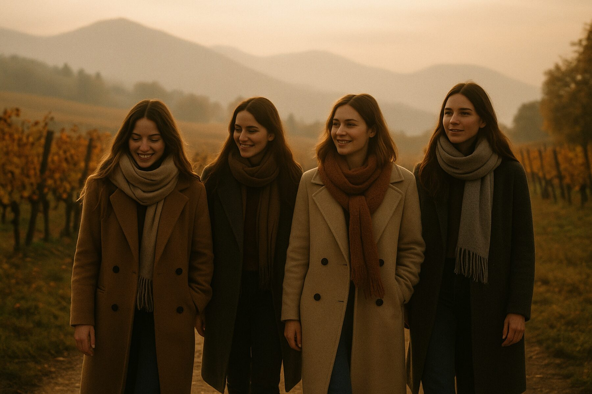

Retreaturi anterioare
Nistru, 19–22 august: zece locuri, toate ocupate. Fotografiile și vocile participantelor vor apărea aici.


În curând — cadre reale
Trei zile într-un loc frumos și plin de forță, ca să încetinești, să te auzi pe tine și să revii la contactul cu tine — alături de psihologi practicieni, într-un cerc mic de femei. Cele mai apropiate două: în octombrie din nou pe Nistru, în noiembrie — în România, în munții de lângă Brașov. Locațiile se schimbă, iar toamna — un retreat în afara țării, în România.
Fiecare retreat are tema lui. Tema primului cerc — «Relația cu adolescenta din tine»: o conversație cu fata de cincisprezece ani care ai fost cândva.
Retreatul Drivit nu este „odihnă de bifat” și nici un training cu teme pentru acasă. Este un spațiu blând, unde te poți opri, poți încetini și, în sfârșit, poți fi nu pentru toți, ci pentru tine. Cercuri de femei, practici gestalt, yoga blândă lângă apă, liniște și grijă — în ritmul și profunzimea ta.
Programul complet și orarul le trimitem personal, după discuție.
Datele exacte le anunțăm la deschiderea înscrierilor. Lasă un contact — îți spunem ție înaintea anunțului public.
Programul complet îl trimitem personal — după cerere și o discuție de cunoaștere.
Nistru, 19–22 august: zece locuri, toate ocupate. Fotografiile și vocile participantelor vor apărea aici.

Alegem locuri unde e ușor să respiri: o casă retrasă pe malul Nistrului, lângă Chișinău — iar toamna ne așteaptă un retreat în România, printre munți și natura de toamnă. Programul și datele le anunțăm.
Află despre următorul retreatÎntre cerere și retreat sunt patru pași, iar primul nu te obligă la nimic.
Lași un contact și câteva cuvinte despre tine. Încă nu e nici înscriere, nici plată.
Douăzeci de minute la telefon. Vedem împreună dacă formatul ți se potrivește — și dacă te potrivești grupului.
După discuție locul se rezervă cu un depozit de 50 €. Trimitem programul, lista de lucruri și detaliile drumului.
Trei zile într-un cerc de zece femei. Apoi — chatul comun al participantelor, dacă vrei să rămâi în legătură.
Da. Grupul e intim — doar 10 femei. Nimeni nu te obligă să te deschizi mai mult decât vrei. În ritmul tău.
E normal și în siguranță. Organizatoarele sunt psihologe profesioniste. Lacrimile fac parte din revenirea la tine.
Da. Tot ce se întâmplă în cerc rămâne în cerc. Fără expuneri publice.
Nu. E suficientă dorința de a fi cu tine. Mai întâi — o discuție de cunoaștere.
~30 de minute de Chișinău, Moldova. Adresa, lista de lucruri și transferul le trimitem după înscriere.
Da, iar împreună e mai cald — și fiecare primește 20 € reducere. Menționează în cerere sau scrie-ne despre amândouă — vă găsim locuri alături. Multora le e mai ușor să se deschidă când e cineva apropiat alături.
Drivit înseamnă sprijin și o revenire blândă la tine, nu un substitut al psihoterapiei sau al tratamentului. Dacă treci acum printr-o criză acută sau ești în terapie pentru o stare dificilă — scrie-ne din timp și îți vom spune sincer dacă formatul ți se potrivește acum.
Dacă planurile se schimbă: la anularea cu 14+ zile înainte de start returnăm depozitul integral. Mai târziu — te ajutăm să transferi participarea la un retreat viitor sau să oferi locul unei prietene. Ne dorim ca decizia să fie una liniștită.
Octombrie — Vadul lui Vodă, de la 300 €. Noiembrie — România, zona Brașov, de la 500 €. În ambele câte zece locuri.